2024-07-24
AHP层次分析法
\n
层次分析法，即所谓的Analytic Hierarchy Process，是通过分解决策相关元素为目标、准则方案等多个层次来进行定量和定性分析
\n\n\n\n
\n
- 指标定权 \n \n\n\n\n
给指标制定权重，打个比方，例如选择旅游地这个决策，可能一般我们由以下5个因素组成，但是每个人（主观）对因素的重视程度不一，ahp可以实现在无需搜集数据的情况下，给这些指标制定权重。
\n\n\n\n
我们一般使用判断矩阵进行标度给分：
\n\n\n\n
\n
- 构建判断矩阵 ：对每一层中的准则或选项进行成对比较，判断其相对重要性。通过1到9的标度来表示相对重要性，1表示同等重要，9表示绝对重要。矩阵中元素 𝑎𝑖𝑗 a ij 表示第 𝑖 i 个元素与第 𝑗 j 个元素的重要性比值。标度示例：\n\n
- 1: 同等重要 \n\n\n\n
- 3: 稍微重要 \n\n\n\n
- 5: 明显重要 \n\n\n\n
- 7: 强烈重要 \n\n\n\n
- 9: 极端重要 \n\n\n\n
- 2, 4, 6, 8: 表示介于上述两者之间的中间值
\n\n
\n
\n\n\n\n
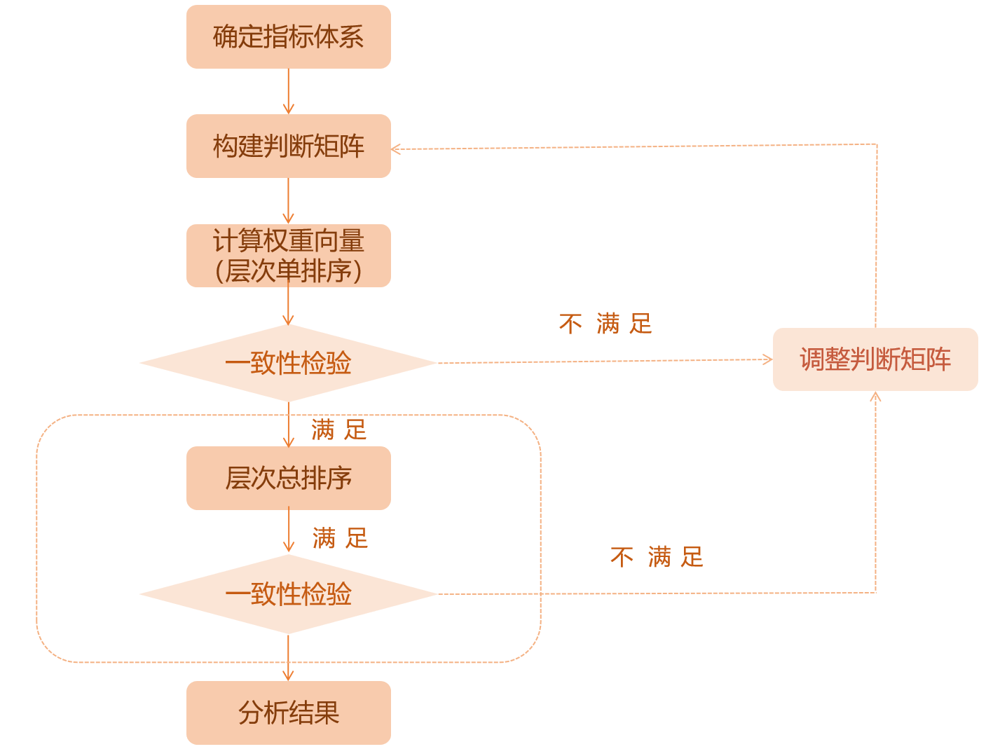
\n\n\n\n
构建层次评价模型
\n\n\n\n
顾名思义，在这个层次评价模型里面，我们需要确认整个决策事件的目标层、准则层、方案层
\n\n\n\n
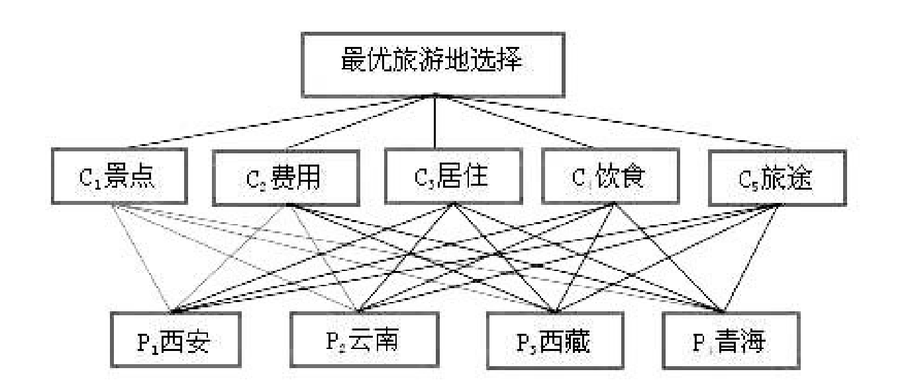
\n\n\n\n其中，
\n\n\n\n
目标层：最优旅游地选择
\n\n\n\n
准则层：景色、费用、居住、饮食、旅途
\n\n\n\n
方案层：西安、云南、西藏、青海
\n\n\n\n
需要注意的时，准则层如果有多层，例如下图所示，依次类推就行了。
\n\n\n\n
构造判断矩阵就是通过各要素之间相互两两比较，并确定各准则层对目标层的权重。
\n\n\n\n
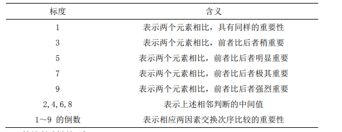
\n\n\n\n构造判断矩阵就是通过各要素之间相互两两比较，并确定各准则层对目标层的权重。
\n\n\n\n
简单地说，就是把准则层的指标进行两两判断，通常我们使用Santy的1-9标度方法给出。
\n\n\n\n
对于准则层A，我们可以构建一个
\n\n\n\n
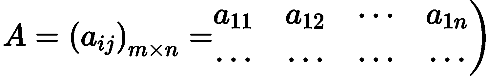
\n\n\n\n其中A 中的元素满足：
\n\n\n\n
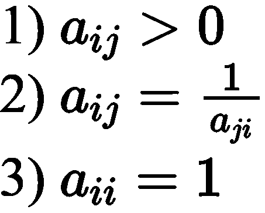
\n\n\n\n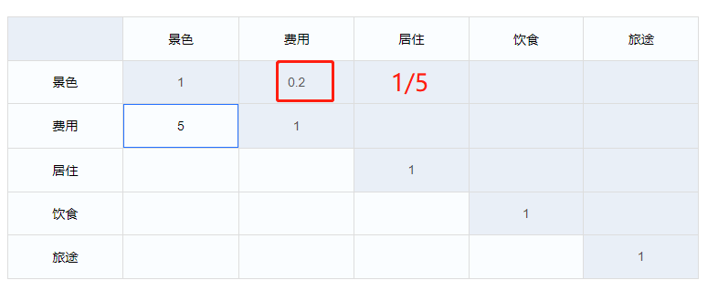
\n\n\n\n构建过程如上图所示
\n\n\n\n
层次单排序与一致性检验
\n\n\n\n
tep1：层次单排序
\n\n\n\n
层次单排序是指针对上一层某元素将本层中所有元素两两评比，并开展层次排序， 进行重要顺序的排列，具体计算可依据判断矩阵 A 进行，计算中确保其能够符合 AW=𝜆𝑚𝑎𝑥𝑊的特征根和特征向量条件。在此，A 的最大特征根为λmax，对应λmax的正规化的特征向量为 W，𝑤𝑖为 W 的分量，其指的是权值，与其相应元素单排序对应。 利用判断矩阵计算各因素𝑎𝑖𝑗对目标层的权重（权系数）。
\n\n\n\n
权重向量（W）与最大特征（λmax）的计算步骤（方根法或者和法）如下表所示：
\n\n\n\n
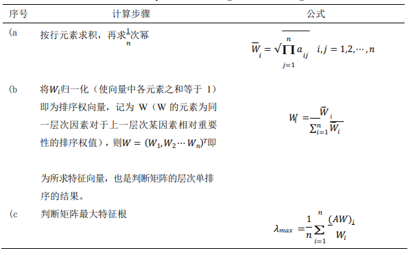
\n\n\n\nstep2：求解最大特征根与CI值
\n\n\n\n
设 n 阶判断矩阵为 B，则可用以下方法求出其最大的特征根𝜆𝑚𝑎𝑥:
\n\n\n\n
BW=λW
\n\n\n\n
其中，W 是 B 的特征向量。 在层次分析法中， 我们用以下的一致性指标 CI 来检验判断的一致性指标 （Consistency Index）：
\n\n\n\n
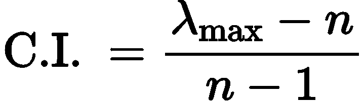
\n\n\n\nC.I.=0 表示判断矩阵完全一致，C.I.越大，判断矩阵的不一致性程度越严重。
\n\n\n\n
step3：根据CI、RI值求解CR值，判断其一致性是否通过
\n\n\n\n
Satty 模拟 1000 次得到的随机一致性指标 R.I.取值表（如下表 所示）：
\n\n\n\n
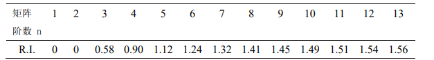
\n\n\n\n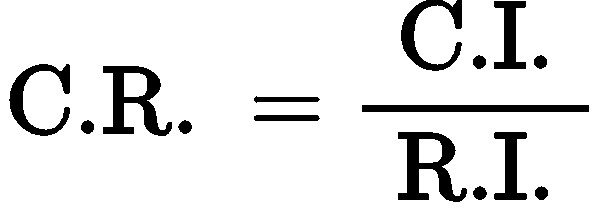
\n\n\n\n当 C.R.<0.1 时，表明判断矩阵 A 的一致性程度被认为在容许的范围内，此时可 用 A 的特征向量开展权向量计算；若 C.R.≥0.1, 则应考虑对判断矩阵 A 进行修正。
\n\n\n\n
2.3.1 层次单排序
\n\n\n\n
简单地说，层次单排序就是根据我们构成的判断矩阵，求解各个指标的权重。
\n\n\n\n
例如我们现在在2.2构建完成了准则层的判断矩阵A如下：
\n\n\n\n
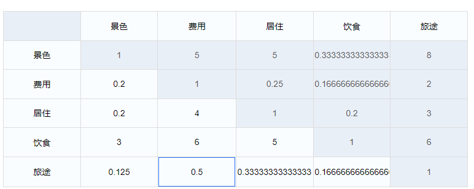
\n\n\n\n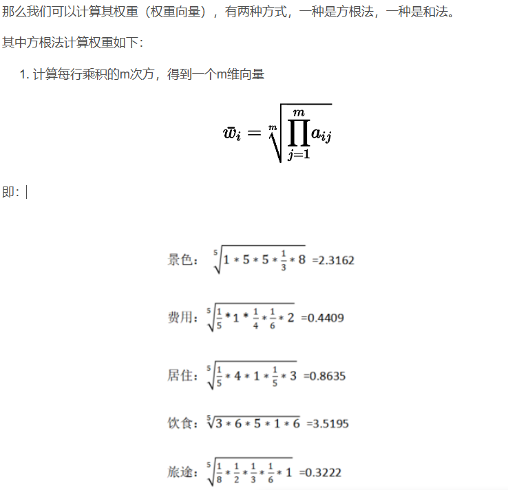
\n\n\n\n将将向量标准化即为权重向量，即得到权重
\n\n\n\n
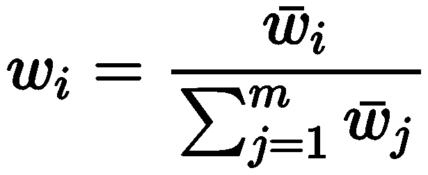
\n\n\n\n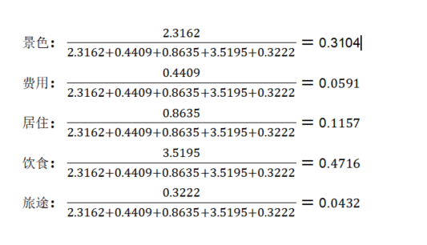
\n\n\n\n还有和法，其实差不多，适用于元素都小于1的情况
\n\n\n\n
求解最大特征根与CI值
| \n\n\n\n 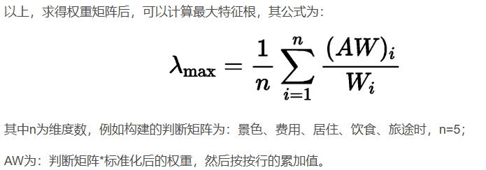 \n\n\n\n指标 |
景色 | 费用 | 居住 | 饮食 | 旅途 |
|---|---|---|---|---|---|
| 景色 | 1 | 5 | 5 | 0.3333 | 8 |
| 费用 | 0.2 | 1 | 0.25 | 0.1667 | 2 |
| 居住 | 0.2 | 4 | 1 | 0.2 | 3 |
| 饮食 | 3 | 6 | 5 | 1 | 6 |
| 旅途 | 0.125 | 0.5 | 0.3333 | 0.1667 | 1 |
| \n\n\n\n |
标准化后权重W为：
| \n\n\n\n景色 | 费用 | 居住 | 饮食 | 旅途 |
|---|---|---|---|---|
| 0.3104 | 0.0591 | 0.1157 | 0.4716 | 0.0432 |
| \n\n\n\n指标 | 景色 | 费用 | 居住 | 饮食 |
| --- | --- | --- | --- | --- |
| 景色 | 0.3104 | 0.2955 | 0.5785 | 0.15718428 |
| 费用 | 0.06208 | 0.0591 | 0.028925 | 0.07861572 |
| 居住 | 0.06208 | 0.2364 | 0.1157 | 0.09432 |
| 饮食 | 0.9312 | 0.3546 | 0.5785 | 0.4716 |
| 旅途 | 0.0388 | 0.02955 | 0.03856281 | 0.07861572 |
| \n\n\n\n |
层次总排序与一致性检验
\n\n\n\n
计算某一层次所有因素对于最高层（目标层）相对重要性的权值，称为层次总排 序。该过程是从最高层次向最低层次依次进行：
\n\n\n\n
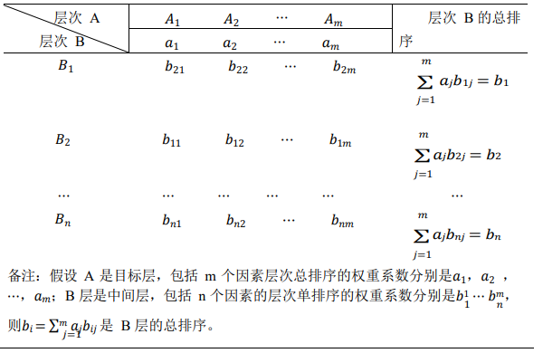
\n\n\n\n设 B 层𝐵1 ，𝐵2 ⋯ ，𝐵𝑛对上层（A 层）中因素𝐴𝑗（𝑗 = 1,2， ⋯ ，𝑚）的层次排序 一致性指标为𝐶𝐼𝑗，随机一致性指标为𝑅𝐼𝑗 ,则层次总排序的一致性比率为：
\n\n\n\n
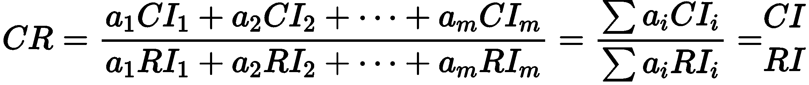
\n\n\n\n\n